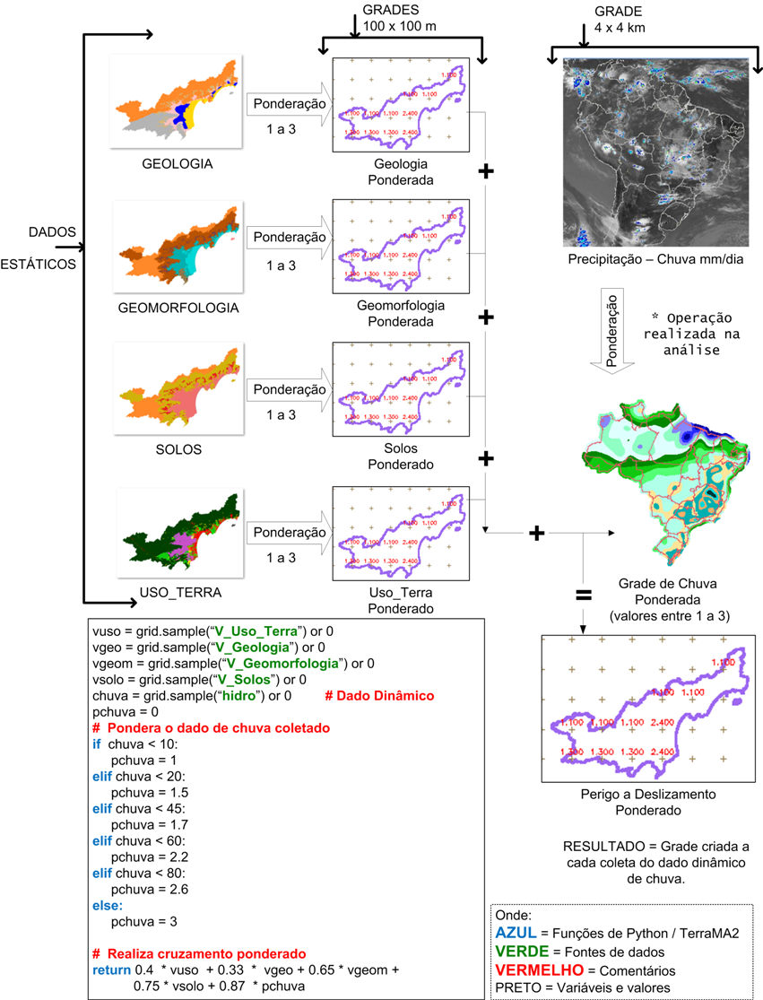
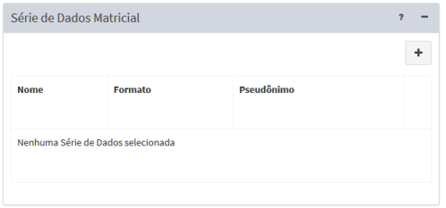

Grade

A Figura 3.26 mostra a área de trabalho utilizada para se definir uma análise baseada em dados matriciais (Grades). Nesta interface deve-se definir um nome único para este tipo de análise, onde será armazenado a grade de saída, quais as grades de entrada serão utilizadas, a programação para execução de análises, configuração da grade de saída e do modelo de análise escrito em Python. Descrevemos a seguir cada um dos campos dessa interface.

Figura 3.26– Análise com base em dados matriciais.
Registro de Análise – Dado Geral:
- Nome: Defina o nome da análise (campo obrigatório). O tamanho máximo do nome é de 100 caracteres. Não é permitido nomes duplicados.
- Tipo: Escolha o tipo “Grade”. As opções “Objeto Monitorado” e “PCD” estão nos itens correspondentes. IMPORTANTE: Após salvar a análise o tipo não poderá ser alterado.
- Descrição: Campo não obrigatório para descrição da análise. O tamanho máximo do texto é de 250 caracteres.
- Serviço: Escolha o serviço de análise que estará associado a cada análise. Se necessário adicionar novos serviços de análise (local ou remoto) consulte.
- Ativo: Botão ativo executará a análise de acordo com a programação (ver abaixo) definida para a análise. Se o botão estiver desmarcado a análise não será executada. Uma análise que não esteja ativa poderá ser executada apenas manualmente pelo botão “Executar” disponível na lista de análises da área de trabalho.
Registro de Análise – Armazenar:
Utilize os parâmetros desta seção para definir o local de armazenamento dos dados. No caso de uma análise baseada em grades, será solicitada uma pasta para armazenar os arquivos matriciais dinâmicos.
- Formato de saída: Para este tipo de análise apenas a opção “Matriz Geotiff” encontra-se disponível.
- Armazenar Dados: Escolha o servidor de arquivos (FILE) que irá armazenar as matrizes de saída.
- Máscara: Máscara do nome dos arquivos a serem armazenados. Essa máscara utiliza partes constantes para capturar prefixos utilizados nos nomes dos arquivos e sequências especiais para indicar ao sistema como interpretar informações de data e hora contidas nos nomes dos arquivos. Utilizar %YYYY para anos de 4 dígitos, %YY para anos de 2 dígitos, %MM para mês, %DD para dia, %hh para hora,%mm para minutos e %ss para segundos. Se desejar informar um subdiretório a partir do servidor de arquivos escolhido, forneça o nome do subdiretório na frente do nome da máscara.
Exemplo: Arquivos a serem armazenados no subdiretório “risco_fogo” com prefixo risco, seguido da data e hora como os arquivos abaixo “risco200805271030.tif”, a máscara a ser utilizada deve ser : “risco_fogo/risco%YYYY%MM%DD%hh%mm.tif”
- Fuso Horário: Fuso horário do dado dinâmico foi gerado. Esse parâmetro garante que as datas e horas dos dados coletados se mantenham consistentes com a base de dados. Dados em horário GMT devem utilizar o valor 0.
- Projeção (SRID): Valor numérico dos parâmetros de projeção e datum dos dados a serem armazenados. Obrigatório para análise tipo “Dados Matriciais”.
Registro de Análise – Agendamento
Nesta seção o usuário deve definir quando será executada a análise.
- Tipo: Escolha tipo “Manual”, “Agendamento”, “Reprocessamento de dados históricos” ou “Automático”. Se Manual a coleta e armazenamento só será realizada se o usuário utilizar o botão "„Executar" na lista de dados dinâmico do item desejado. Se “Agendamento” ou “Reprocessamento de dados históricos” preencha os campos abaixo.
- Data Inicial
 (somente se Tipo for “Reprocessamento de dados históricos”): Clique no campo para escolher a data e hora que será utilizada para início do reprocessamento.
(somente se Tipo for “Reprocessamento de dados históricos”): Clique no campo para escolher a data e hora que será utilizada para início do reprocessamento. - Data Final (somente se Tipo for “Reprocessamento de dados históricos”): Clique no campo para escolher a data e hora que será utilizada para fim do reprocessamento.
- Unidade de tempo: Escolha um item entre “Segundos, Minutos, Horas e Semanalmente”.
- Frequência (somente se Unidade de tempo for Segundos, Minutos, Horas): Digite um valor de um número inteiro.
- Tempo Inicial (somente se Unidade de tempo for Segundos, Minutos, Horas): Clique no campo para escolher o valor de hora, minuto e segundo que será utilizado como referência para executada a coleta e armazenamento do dado dinâmico.
- Agendamento (somente se Unidade de tempo for Semanalmente): escolha uma das opções entre “Domingo, Segunda-feira, Terça-feira, Quarta-feira, Quinta-Feira, Sexta-feira e Sábado”
- Hora (somente se Unidade de tempo for Semanalmente): clique no campo para escolher o valor de hora, minuto e segundo que será executada a coleta e armazenamento do dado dinâmico.
Registro de Análise – Série de Dados Matriciais
Nesta seção o usuário deve escolher qual ou quais dados estáticos (matriciais somente) ou dinâmicos (Matriz) serão cruzados (ou sobrepostos espacialmente) para gerar um novo dado matricial dinâmico.
- + : Clique no botão para selecionar um dado estático ou dinâmico na janela que será apresentada.
- „ Dado Estático : Clique para abrir a lista de dados estáticos matriciais a escolher. Note que uma vez escolhido o mesmo será retirado dessa lista. A lista de dados escolhidos fica disponível na área de trabalho.
- „ Dado Dinâmico : Clique para abrir a lista de dados dinâmicos matriciais a escolher. Note que uma vez escolhido o mesmo será retirado dessa lista. A lista de dados escolhidos fica disponível na área de trabalho.
- “OK” : Confirma inclusão do dado na lista.
Após a inclusão de um dado na lista, o campo de pseudônimo pode ser alterado. Use o botão “Remover” para excluir um dado da lista (Figura 3.27).
- Pseudônimo: Ao escolher um dado para a lista automaticamente o nome e o pseudônimo são iguais. Clique no campo correspondente que deseja alterar. Nas regras de análise serão estes pseudônimos que deverão ser utilizados pelo operadores (ver item 3.3.2.3).

Figura 3.27 – Módulo de Administração: Análise – Lista de Dados Adicionais
Registro de Análise – Configuração da Grade
Nesta seção o usuário deve definir o tamanho da área da matriz de saída, resolução e o interpolador para ajustes da resolução entre os dados de entrada e saída.
- Método de Interpolação: Escolha o método de interpolação, se “Vizinho mais próximo”, “Bi linear” ou “Bi cúbico”.
- Interpolação nula: Digite o valor desejado para valores nulos da matriz de saída.
- Área de Interesse: Escolha como será definida a área da matriz de saída, se “União”, a área de interesse corresponde a área da união de duas ou mais imagens inseridas na série de dados matriciais, “Mesmo da série de dados” ou “Personalizada”, parâmetros descritos abaixo.
- Série de Dados (somente se Área de interesse for “Mesmo da série de dados”): Escolha um dos dados matriciais selecionados para a análise como referência do tamanho da área para a matriz de saída”.
- X min (somente se Área de interesse for “Personalizada”): Digite o valor mais a esquerda da área. Valor depende do sistema de projeção utilizado.
- Y min (somente se Área de interesse for “Personalizada”): Digite o valor mais abaixo da área. Valor depende do sistema de projeção utilizado.
- X max (somente se Área de interesse for “Personalizada”): Digite o valor mais a direita da área. Valor depende do sistema de projeção utilizado.
- Y max (somente se Área de interesse for “Personalizada”): Digite o valor ponto mais acima da área. Valor depende do sistema de projeção utilizado.
- Projeção SRID (somente para Filtrar for “Personalizada”): Valor numérico dos parâmetros de projeção e datum a ser utilizado pelo par de coordenadas acima.
- Resolução: Escolha o tamanho do pixel, se “Grade menor” , “Grade maior”, “Mesmo da série de dados” ou “Personalizada”.
- Série de Dados (Somente se Resolução for “Mesmo da série de dados”): Escolha um dos dados matriciais selecionados para a análise como referência do tamanho da área para a matriz de saída”.
- X : (Somente se Resolução for “Personalizada”): Digite o valor do tamanho do pixel. Este deve ser determinado conforme a projeção SRID definida anteriormente, ou seja, em graus decimais se a projeção for em coordenadas geográficas, ou metros se a projeção SRID for em coordenadas planas (UTM, cônica, polar, etc.)
- Y : (Somente se Resolução for “Personalizada”): Digite o valor do tamanho do pixel. Valor depende do sistema de projeção utilizado, conforme descrito acima.
Registro de Análise – Programa
Nesta seção o usuário deve editar o programa de análise. A edição do programa utiliza a linguagem Python e portanto, siga rigorosamente a sintaxe do comando definidos para esta linguagem. Além dos comandos e funções de Python você pode utilizar os utilitários e os operadores criados especialmente para a plataforma TerraMA2.
Para facilitar a edição do programa, botões na parte inferior da janela permite escolher atalhos de alguns itens específicos. Ao escolher um item entre os botões disponíveis o conteúdo será incluído na posição em que estiver o cursor. Os atalhos disponíveis são:
 - Atalho para os utilitários da plataforma, tais como “buffer” a ser aplicado às geometrias do objeto monitorado, unidades de distância, tempo, “add_value” e “get_value”.
- Atalho para os utilitários da plataforma, tais como “buffer” a ser aplicado às geometrias do objeto monitorado, unidades de distância, tempo, “add_value” e “get_value”.
 - Atalho para o operador “Amostra” que recupera os “pixels” da atual matriz dinâmica ou de uma matriz estática.
- Atalho para o operador “Amostra” que recupera os “pixels” da atual matriz dinâmica ou de uma matriz estática.
 - Atalho para os operadores históricos que trabalham com dados dinâmicos matriciais de observação. Os operadores utilizam o dado atual e o passado disponível.
- Atalho para os operadores históricos que trabalham com dados dinâmicos matriciais de observação. Os operadores utilizam o dado atual e o passado disponível.
 - Atalho para os operadores que trabalham com dados dinâmicos matriciais de previsão. Os operadores utilizam o dado atual e o futuro disponível.
- Atalho para os operadores que trabalham com dados dinâmicos matriciais de previsão. Os operadores utilizam o dado atual e o futuro disponível.
 - Atalho para algumas funções, operadores e comandos de Python.
- Atalho para algumas funções, operadores e comandos de Python.
Após editar o programa, poderá utilizar o botão “Validar” para identificar se há erros de sintaxe nos comando, funções e operadores utilizados. O botão “Salvar e executar” grava as últimas alterações e executa a análise mesmo que esta esteja inativa. Se desejar apenas gravar as alterações clique na seta do botão e escolha “Salvar”. Para as análises que estiverem ativas as próximas execuções seguirão as regras definidas na seção “Agendamento”.
Created with the Personal Edition of HelpNDoc: Create cross-platform Qt Help files